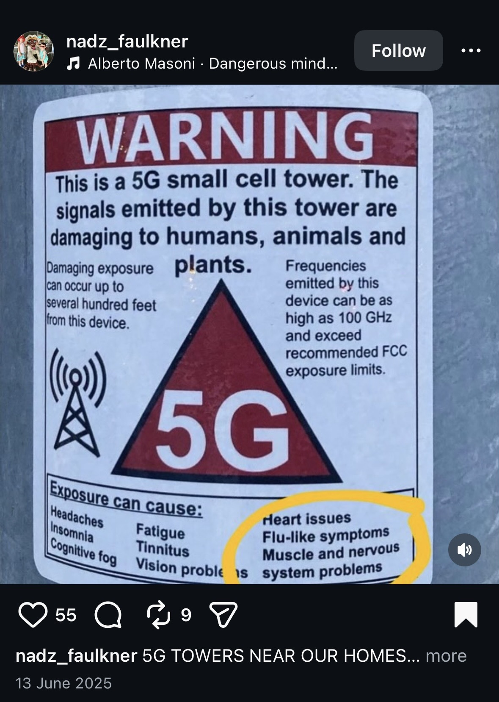

What is Radiation
Learn the facts of what radiation actually is and whether or not it is truely dangerous.
Learn more
Social media is full of alarming claims about 5G.
Below, explore examples and uncover what the science actually says.
It is an important skill to be able to spot these for yourself. See here for information about how to spot misconceptions in physics.

This poster was shared widely on Facebook and Instagram. It displays a fake warning on a 5G tower, not an official one.
This video shows an RF meter, a device used to measure electromagnetic field strength, measuring the field next to a 5G tower.
A large part of the problem of misinformation about 5G is people believing that an unusual illness implies a correlation between 5G and that health problem.

Have a look at this website by Natural News, a website renouned for its psuedoscience and fake news.
Which of these radiation-related activities do you think is harmful to humans? (Select all that apply)
These answers debunk common myths about radiation.
Lets analyse and break down the facts from the fiction in some of these headlines and posts about radiation.
Learn the facts of what radiation actually is and whether or not it is truely dangerous.
Learn moreFind out what 5G actually is, how it works, and why we need it.
Learn moreFind out about how the spread of fake news surrounding 5G has impacted politics and public opinions globally.
Learn more